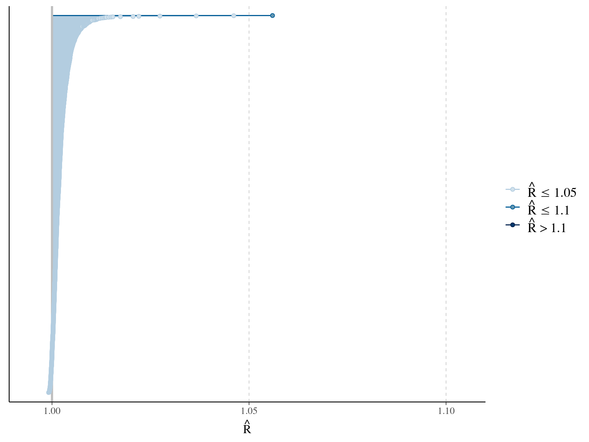
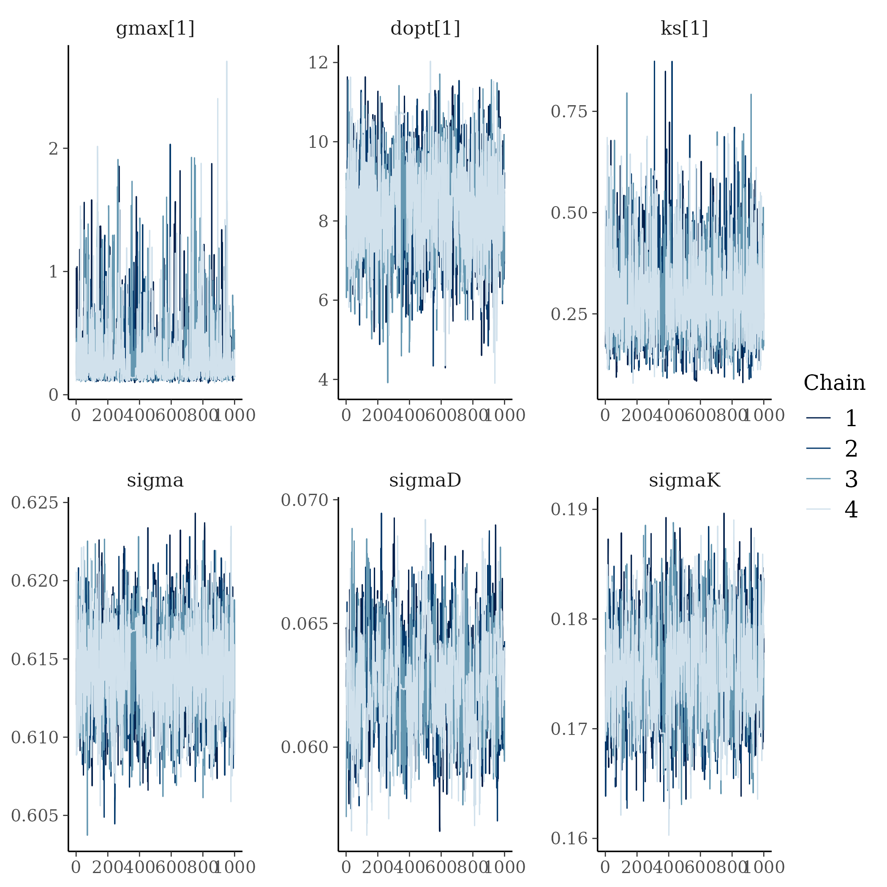
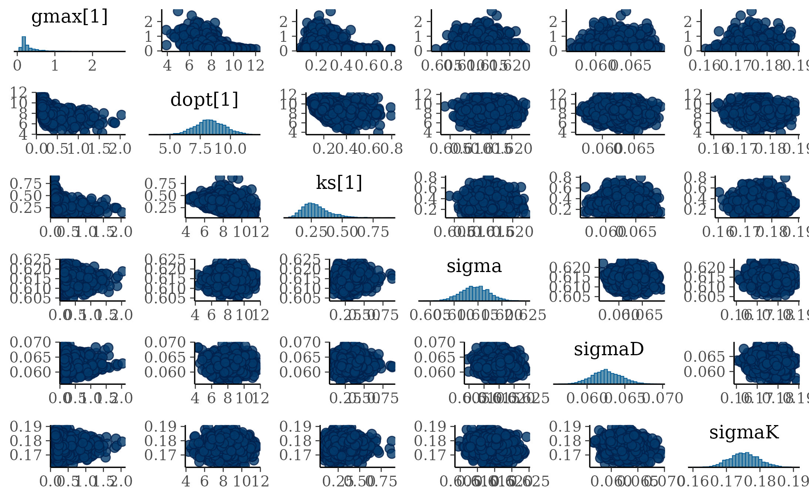
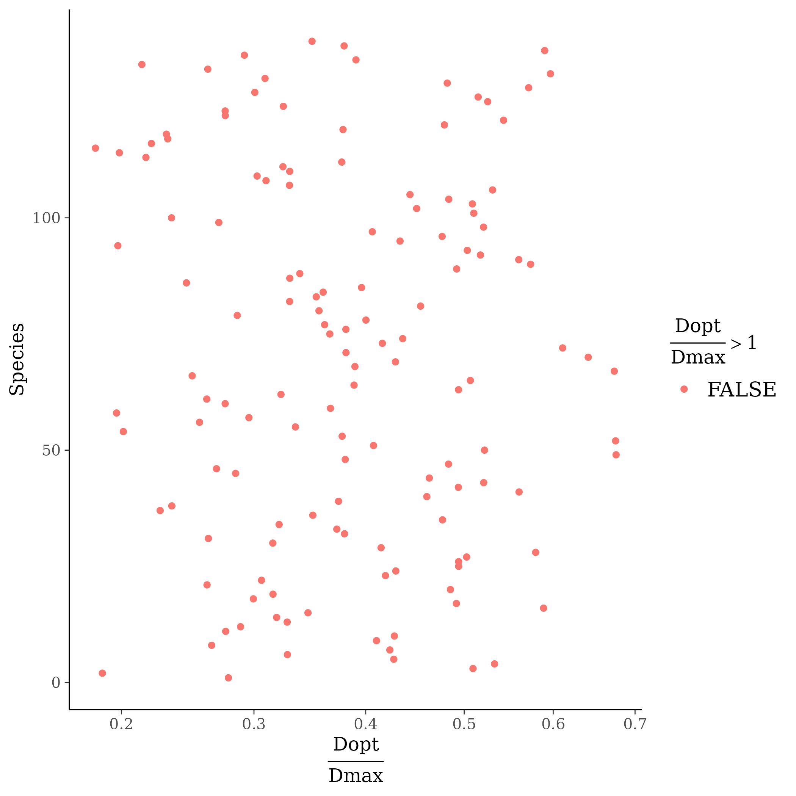

Chapter 3 Model half
In this chapter, I fitted the selected model with reduced data.
3.1 Data
I focused on trees at 20 meters from any plot edges for neighbourhood effect. I used only recruited trees in the censuses with at least 10 measurements of diameter at breast height (DBH, cm). I used only species with at least 10 trees following previous requirements. And, I randomly selected 20 trees in each species (Tab. 3.1 & Fig. 3.1).
| N | Median | Minimum | Maximum | |
|---|---|---|---|---|
| families | 38 | |||
| genera | 95 | |||
| species | 138 | |||
| individuals | 1 995 | |||
| observations | 30 432 | |||
| census | 14 | 11 | 30 | |
| year0 | 1 997 | 1 985 | 2 010 | |
| yearmax | 2 019 | 2 003 | 2 021 | |
| dbh0 | 11 | 5 | 15 | |
| dbhmax | 15 | 6 | 77 |
Figure 3.1: Tree diameter trajectories in reduced data. Color represent individuals.
3.2 Model
I used a Gompertz model (Hérault et al. 2011), were the diameter of individual \(i\) at year \(t\) is the sum of annual growth from \(t0\) to \(t\):
\[ DBH_{t,i,s} \sim \mathcal N (10 + Gmax_i \times \sum _{y=1|DBH_{t=0}} ^{y=t} exp(-\frac12.[\frac{log(\frac{DBH_{t,i}}{100.Dopt_i})}{Ks_i}]^2)), \sigma) \\| Dopt_i \sim \mathcal N(Dopt_s,\sigma_D), Ks_i \sim \mathcal N(Ks_s,\sigma_K) \]
The annual growth rate for individual \(i\) at year \(y\) with a diameter of \(DBH_{y,i}\) is defined following a Gompertz model (Gompertz 1825) already identified as the best model for growth-trajectories in Paracou (Hérault et al. 2011), where \(Gmax_i\) is the fixed maximum growth potential of every individual, \(Dopt_i\) is the optimal diameter at which the individual reaches its maximum growth potential, and \(Ks_i\) is the kurtosis defining the width of the bell-shaped growth-trajectory (see figure 1 in Hérault et al. 2011). \(Dopt_i\) and \(Ks_i\) are random effects centered on species parameters \(Dopt_s\) and \(Ks_s\) with associated variances \(\sigma_D\) and \(\sigma_K\).
3.3 Fit
The model correctly converged (\(\hat R < 1.1\)) for the majority of \(Gmax_i\). The correlation between \(Dopt\) and \(Ks\) is acceptable but marked. \(Gmax_i\) posteriors have logical uncertainty but are varying widely among individuals.



3.4 \(Dopt_s\)
Looking into details, most species showed a \(Dopt_s\) around 40% of the observed 95th quantile of their observed diameters, as expected (B. Hérault pers. com.). However, 9 species showed a \(Dopt_s\) above the observed 95th quantile of their observed diameters. This species are understory species that does not follow a Gompertz shape, and they correspond to the slightly divergent \(Gmax_i\). Swartia polyphylla is not round and will be removed from next fits. Other species will be constrained on the observed 95th quantile of their observed diameters (1.5X).

References
Gompertz, B. (1825). On the nature of the function expressive of the law of humanmortality, and on a newmode of determining the value of life contingencies. Philosophical Transactions of the Royal Society of London, 115, 513–583. Retrieved from https://www.tandfonline.com/doi/full/10.1080/14786445908642737
Hérault, B., Bachelot, B., Poorter, L., Rossi, V., Bongers, F., Chave, J., Paine, C.E.T., Wagner, F. & Baraloto, C. (2011). Functional traits shape ontogenetic growth trajectories of rain forest tree species. Journal of Ecology, 99, 1431–1440.